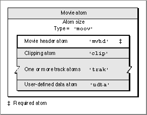

Movie Atoms
You can use movie atoms to specify information that defines a movie. The movie atom contains the movie header atom, which defines the time scale and duration information for the entire movie, as well as its display characteristics. In addition, the movie atom contains each track in the movie.The movie atom has an atom type of
'moov'. It contains other types of atoms, including one leaf atom--the movie header ('mvhd')--and several atoms that contain other atoms: a clipping atom ('clip'), one or more track atoms ('trak'), and user-defined data ('udta').Figure 4-5 shows the layout of a movie atom. The movie header atom is the only required atom in the movie atom.
Figure 4-5 The layout of a movie atom

You define a movie atom by specifying these elements:
- Size. The number of bytes in this movie atom.
- Type. The type of this movie atom (the atom type,
'moov').- Movie header. The movie header atom associated with this movie. See the next section for details on the movie header atom.
- Movie clipping atom. The clipping atom associated with this movie. See "Clipping Atoms," which begins on page 4-15, for more information.
- Track list. One or more track atoms associated with this movie. See "Track Atoms," which begins on page 4-9, for details on track atoms and their associated atoms.
- User data. The user-defined data atom associated with this movie. See "User-Defined Data Atoms," which begins on page 4-14, for a discussion of user-defined data.